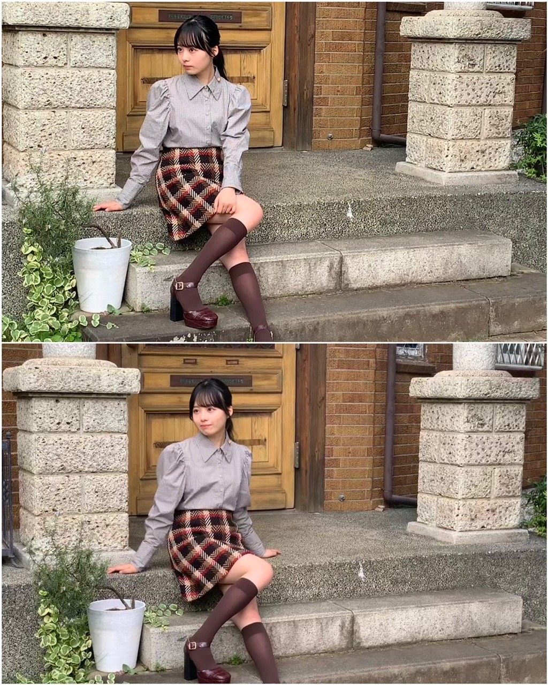
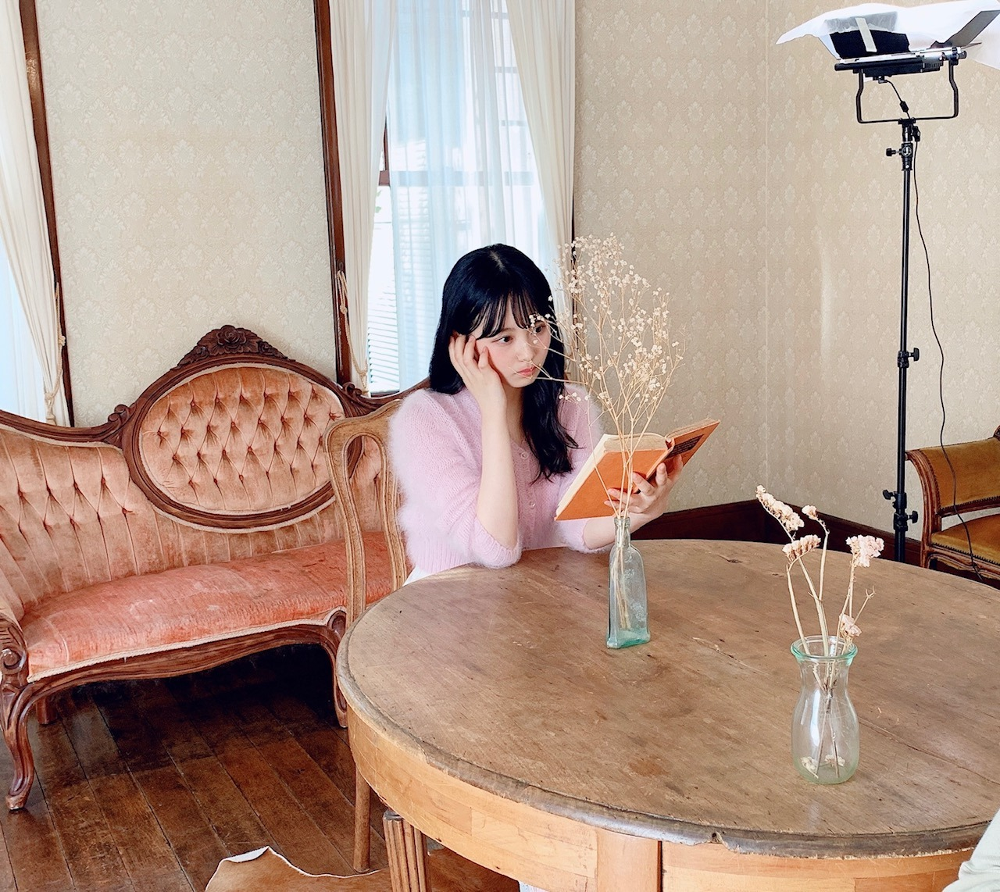
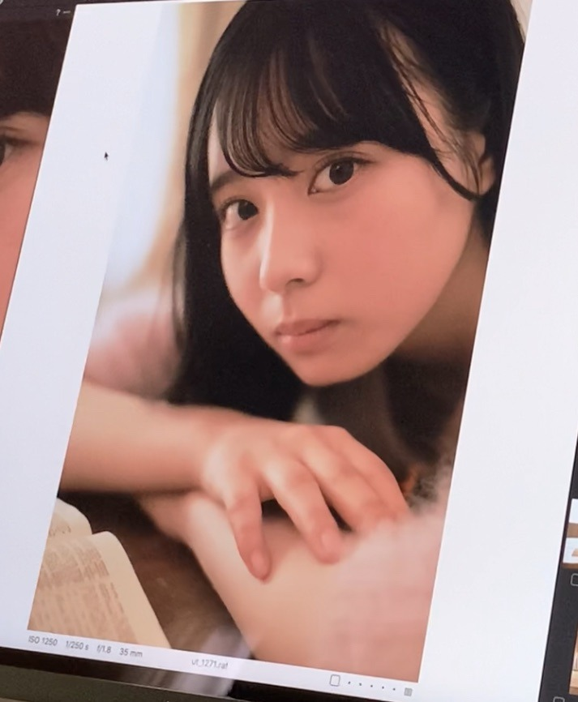
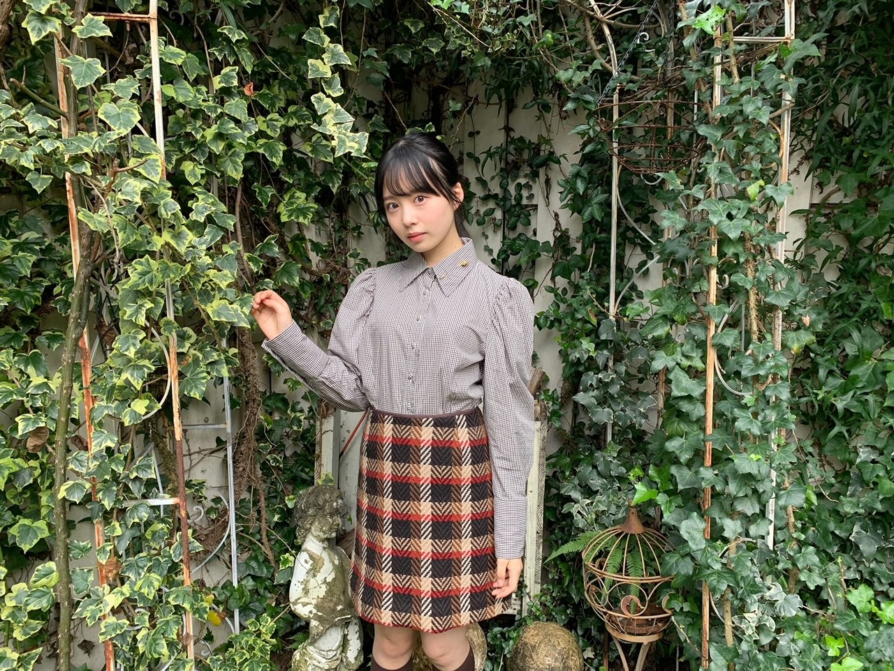

2020/1124Tue思考能力。佐藤璃果
こんにちは~
乃木坂46 (新)4期生 岩手県出身
佐藤璃果です。

秋色のお洋服がとても可愛いです。


ピンクのモコモコのお洋服を着ております。
11月21日発売
アップトゥボーイVol.297さんのオフショットです。
お家が素敵で、家具も素敵で、
こんなお家に住みたい！と思いました。
岩手県出身の方が2人もいらっしゃって
とても嬉しかったです︎︎☺︎
色んな岩手トークを楽しみました。

これは堀未央奈さんの写真集に出てくる
所に似ている〜！と盛り上がっていたら
マネージャーさんが撮るよ！！と言ってくださた写真です。
あのポストカードにもなっているところです！
わかりますか？
でも後で見返したら、もっとゲート？の部分が白かったですね(--;)
そして、少し前の堀さんの755で
私の話題が出ていて、それに堀さんも反応してくださっていて嬉しかったです。
書いて下さった方、それに反応して下さった堀さんありがとうございます( ¨̮ )
❁
坂道研修生ツアーを見た日から、
私たちがグループに配属された際には
全員、載せたいと思っていたんだよ
というお言葉を頂いて、
それがとてもとても嬉しく、感動しました。
発売中です。
よろしくお願いします。
~~~質問~~~
○ ストーブとエアコンと炬燵どれ派ですか
夢は暖炉で、
実家ではストーブと炬燵
現在エアコンです。
○冬の防寒は最大でどのくらいまでする？
ヒートテックなど三、四枚着込みます！
○今年中3の受験生で推薦受けるんだけど面接とか苦手で...だから応援してほしいです( .. )
目の前の人をかぼちゃと思いましょ！笑
あと、答えを丸暗記しすぎると予想してなかった質問が来ると焦ってしまうので、
普通の会話、ぐらいの気持ちでいるのもいいかも知れません...
私は焦るタイプでした(--;)
○ イルミネーションといえば、神戸のルミナリエは見に行ったことありますか？
わからないです、、
素敵なんですか？？調べてみますっ
○ 水族館で好きな生き物はなんですか？
イルカ、アシカさん
○ 璃果ちゃんはゼッケン後ろ前反対に着たことありますか？？
沢山あります！
ちなみに洋服は裏表逆もあります！
○ 自販機でつい買ってしまうものってありますか？
お水です！
○ 岩手県では「おばんです」や「したっけ」って言いますか？
もしくはだれがか使ってるのを聞いたことはありますか？
おばんですは、よくテレビで流れていたし、おばあちゃんも使っていた気がします
したっけはよく使いますよ~
したっけさー、なんとかでさーって
○ 今年新しく買ったアウターとかありますか？
迷って何も買えていません...
○ 好きなクリスマスソング教えてください☆
クリスマスソング！
○ 岩手県民はよくお餅を食べるとのこと。
璃果ちゃんもよく食べてた？
すんごく食べていました。
11月20日、掛橋沙耶香ちゃん
❁お誕生日おめでとう❁
不思議な子だなぁと思うことが多いのですが、色々絡んでくれることがとても嬉しいです！声も可愛くて、ギターも上手で、
物怖じせずに堂々としている
さやかちゃん尊敬︎︎︎︎︎☺︎
さやか！！
すごい一生懸命褒めようとしてくれたことが印象深いです！！
天真爛漫さ素敵です。
これからも絡みに来てください
どんとこいやっ
~~~~~~~~~~~~~~~~~~~
明日はるなぴです。
一緒に乗り越えよう2。
~~~~~~~~~~~~~~~~~~
皆さんにとって
素敵な1日になりますように。

扉も素敵でした。
またね。
好きなスイーツはなんですか？
オフショット祭りになりました。
もっと良いものを作っていけるように日々
考え行動していきたいです。
いつもありがとうございます。
#43 りか
コメント(268)
ノギサカキッツ見たよ！
ナースりかちゃん可愛すぎた！
モコモコいいよねー。
自分も冬場は着込むもん。
外でも家でも。
靴下2枚履きだし。
写真たくさんありがとう！雑誌確認してみるね！
好きなスイーツは「シュークリーム」かな。なぜかチョコと生クリームは苦手になってしまって…、、
ー質問ー
・呼ばれたいあだ名ってあるかな？
・気晴らしではよく何をする？
・写真集を発売するならどこで撮影したい？
・質問というかお願い！メガネをかけた姿も見てみたいな！
ありがとう！次回も楽しみにしているよ。
研修生ライブ行きました！
ずっと推してます！！！
最近寒くなってきて大変だと思うけど体調に気をつけて頑張って下さい！
4期生ライブ絶対みます！
前回のブログにコメントしたのに反映されてなかったみたい(;_;)
オフショのチェックスカートのコーデとっても似合ってて可愛い！
好きなスイーツはチーズケーキです！あまじょっぱさが大好きです¨̮♡
ミーグリで璃果ちゃんと直接お話できるの楽しみにしています！
質問とリクエストです。
12月に定期試験があるので応援して欲しいです(T_T)
璃果ちゃんのメイク方法とかヘアアレンジの仕方をブログで紹介して欲しいです。
また5日後ブログ楽しみにしてます♡
俺の好きなスイーツは杏仁豆腐やよ。
今日食べた。
今日も可愛い。
いつも元気をくれてありがとう。
明日も頑張るよ。
璃果ちゃんブログ更新ありがとう！
服装だけじゃなくて顔も可愛いすぎだけどね(笑)
雑誌のお仕事が多くてファンとしても超嬉しい(^^)
璃果ちゃんが多くの人から可愛いと思われてる証拠だねぇ
乃木恋の彼氏イベントが始まりました
僕はまだ高校生でバイト禁止の学校なので
無課金で頑張ってるのですが
前回璃果ちゃんの彼氏になれました！
今回も璃果ちゃんの彼氏になれるように頑張るね！
新4期生の中で璃果ちゃんが1番人気なんだから
難しいんだよぉ…
また5日後を楽しみに待ってまーす！
モデルりかちゃん〜
好きだわ〜:heart.gif
モデルりかちゃん〜
好きだわ〜:heart.gif
いいね、洋館に佇むりかちゃん。色合い
がばっちり。ハイソックスが可愛い。
編集の方々の愛を感じます。
でました、お水。
さくちゃんが前、らじらーに出た時、
私の好きな飲み物は何でしょうというク
イズで、水という衝撃的な答えを導いて
いました。
でも、体にいいのは水だよね。
好きなスイーツは、一周回って、かたい
昔ながらのプリンかな。
またまた質問に返信をいただけたような気がする...!!!嬉しくて叫んじゃいました、、よくコメントしてる人のことは覚えたりしてるのですか？？いつか握手会に行った時に、あのコメントの！って気づいてもらえるように一生懸命愛を届けます！！！ちなみに私は、今年流行ってる？ボアのジャケットみたいなやつ、すごくかわいいんだけど似たのが多くて選べずにいます、、、！りかちゃんは淡い色のロングコートが似合いそう、！もちろんどれもかわいいはずだけど！！
最近はね、タルトにハマっています！！あの生地がとっても好きなんです、、りかちゃんの誕生日ケーキはタルト派ですか？ベーシックなケーキ派ですか？りかちゃんの作ったスイーツ絶対美味しいのでまた写真楽しみに待ってます！
また次のブログも楽しみにしてます！いつもありがとう
いつも楽しみにしてるよ！
オフショットもかわいいよ
これからも璃果ちゃんを応援します！
質問
学生時代に呼ばれてたあだ名教えて！
好きなお餅の食べ方教えて！僕は磯辺焼きがやっぱ好き！
オフショットたくさんありがとう
璃果ちゃんは本当にスタイルが良くて可愛いお洋服が似合いますね...！！天使すぎます
-----------------------------
僕もイルカめちゃくちゃ好きなんです～！
小さい頃はイルカさんと一緒に泳ぎたいなぁとショーを見ながら思っていました。笑
愛らしいお顔がいいですよね〜
-----------------------------
璃果ちゃんの方言もっと聞きたい～！
握手会とかミーグリが始まったら方言で釣ってとかお願いしちゃってもいいですか？？
｢んだんだ｣も生で聞いてみたいです...！
方言ってすごく素敵ですよね。
静岡はそんなに訛ってないのかなと思ってたけど、他県の人からすると違和感あるみたいです。
｢～だよね？｣を｢～だら？｣って言ったりします。笑
-----------------------------
質問です↓
・標準語だと思っていたけど実は方言だったみたいな言葉はありましたか？
・璃果ちゃんの一番好きな花が知りたいです！
・元研修生のメンバーで最近会った子はいますか？
ぜひ教えてください～！
-----------------------------
この前未来虹ちゃんの配信を見ていたのですが、璃果ちゃんの自己紹介について話していてすごく幸せな気持ちになりました！
グループは違うけど仲良しな感じが素敵です...！
-----------------------------
昨日焼き芋を食べました。
紅はるかという品種だったのですがとっても甘くて美味しかったです〜！
好きなスイーツはミルクレープです！！！
次回のブログも楽しみにしてます！
大好きです～！！！
あきひろ
写真集とのオマージュショットも見れて嬉しいです！！
755のことについても触れてくれてたけど、例のコメントは私がコメントさせて頂いたものです！！
未央奈ちゃんが4期生から愛されていることを知れて嬉しくなって、コメントしました。その話題も出してくれてありがとう！！
またブログで未央奈ちゃんの話題出してね〜！笑
お久しぶりです〜
部活とか研修旅行で忙しくてなかなか見る時間がなかった(-_-)ｺﾞﾒﾝﾈｰ
オフショット全部可愛すぎだね!笑
この季節に合うファッションで璃果ちゃんはスタイルが良いから凄く似合ってる!
今後璃果ちゃんの写真集が出るのが楽しみです笑
出たら真っ先に予約するね〜笑
久しぶりの【質問!】
Q,バイトとかしたことある??
してたらなんのバイト??
以上〜
また感染者数が増えてるけど体調に気をつけてねー
【From:TATEYU46】
好きなスイーツはねぇー…
うーーーーん
甘いものかな
タルト、ケーキ、クッキー…
りかぴは？
じゃぁばいばーい！
今回も素敵な写真ありがとう！
好きなスイーツは、パフェです！
あまり、食べる機会が無いですが、色々と乗っかっている感じが大好きです！
寒くなってきたから、余計に食べる機会無くなっちゃってますね。
りかちゃんは、暖かい時に食べたい物、寒い時に食べたくなる物なんですか？
次のブログも楽しみにしてますね！
りかた〜ん♪
これからの時期大変だと思いますが体調には気をつけてくださいね！
ロゴを見たりアナウンスを
見たりすると今からワクワク
してきます。
寒く、乾燥もしていますので
喉のコンディション、身体の
コンディションにお気をつけ
ください。
最高の日になる事を願って
います。
パジャマトーク。
どんなお話しがされるのか
こちらも楽しみです。
行きたい国は
アメりか、アフりか、コスタりか。
お芋も好きだけどパプりか
も好きかな。
沢山お話ししてファンの
方々に璃果い(理解)して
もらうのも有りかな。
そればかリカ、沢山
愛してもらいましょう。
冬の湖にはるのは
氷りか。
夏と言えば夏祭りか。
璃果さんはみんなの
誇りか。
『私にとって璃果さんは
光りかがやく存在です』
:)
洋服似合っててかわいいね。
タイトルの思考能力は何か意味があるのかな？
前に花言葉よく書いてくれてたよね⁉
へえーそうなんだって勉強になるんで好きでした。
璃果ちゃんから質問されるの嬉しい！
好きなスイーツは
プレミアムロールケーキです!
コンビニですぐ買えるしね。
璃果ちゃんは何かな？
寒くなってきたから身体に気をつけてね〜
ではまた5日後に。
相変わらず可愛いね〜
4期生ライブのチケット販売開始したね！
4つも配信する所あるから迷っててまだチケット買えてないよー
早く買わないと！
めっちゃ楽しみにしてるね！
今日20歳になったよー！
あっという間に20歳になってしまったよ
今日は仕事休み取ってまいやんのカフェに行ったあとにイメチェンしたくて美容室に行ってきたよ！
今までボブだったんだけどマッシュにして美容師さんに直毛だからパーマかけた方楽だよって言われて初めてパーマかけてみた！
頭軽くてめっちゃ良い！
明日会社行くの緊張する笑
今年もあと1ヶ月ちょいで終わるね
早いねー
今年はバスラの4日目でしか璃果ちゃんに会えなかったから来年はたくさん会えるといいな〜
次のブログも楽しみにしてるね〜
雑誌も買ったよ！本当に素敵だったしインタビューも良かった！！！
来月は4期生ライブもありますしみんなで力合わせて頑張ってね！！そして私は本当に砂糖掛けが1番大好きなのでまた写真載せてくれるとらしいです！あ、エピソード付きで❤︎
またコメントします！あ、ファンレターも書きますね❤︎
オフショットが輝いてます。眩しいｯｯ!!
俺も先週試験と面接受けてきたよ！
来週結果発表だから受かってたら、コメントするわ〜(軽い)(受かっててください)
アシカだけさん呼びで笑う。
イルカはどうしたんだよぉ！
イルカさんじゃないのかよぉ！
オフショットめっちゃいいですね。知らんけど。
スイーツかぁ。う〜ん。焼肉かなぁ。(質問ガン無視)
嘘です。全部好きです。
りかちゃん！ブログ更新ありがとう～
今回のブログ写真も
かわいい…！美しい…！！
尊いです……あなたは天使ですか
いつも応援してます
☆質問☆
寒くなってきましたが、お鍋とか食べたりしますか？
あり鰹
アップトゥボーイ見たよ！かわいかった(T_T)オフショもありがとう！
今日は朝からずっと辛くて泣くのこらえて生活してたから
ブログ読んで少しだけ気持ちが晴れました( ；ᵕ； )
好きなスイーツはチーズケーキかなー！
5日後の更新楽しみにしてるね⸜( •ᴗ• )⸝またね！だいすき！
ＵＴＢ買ったよ。可愛いかったよ。
２７日のＬＩＮＥ ＬＩＶＥ出演おめでとう。
久保ちゃんとのトーク楽しみにしています。
またね
今日のブログの写真も
とても可愛い写真ばかりだった
ライブ楽しんでね
チケット買ったよ
おばあちゃん家が 農家の話は 雑誌だったか..
ブログの中を 探してた 笑 。。
作っているのは お米だけかな？ 。。
ずっと待っていました
アップトゥボーイのオフショット
ありがとうございます
岩手トークのインタビュー読みました。
璃果ちゃんが生まれた岩手県に行ってみたく
なりましたよ
もうそろそろ岩手県は雪が降るのかな
やっぱ璃果ちゃんはポニテ似合いますね
こんなにポニテ似合うのはなーちゃん
以来だよ！
俺が知る限りさ
20日がさぁちゃんのお誕生日でしたね
なんかプレゼント渡したのかな？
さぁちゃんとこれからも仲良しで
♪(*^^)o∀*∀o(^^*)♪ (=´∀｀)人(´∀｀=)
26枚目シングルのタイトルも決まりましたね
明日のベストアーティストでテレビ初披露らしいから
めちゃくちゃ楽しみだし
26枚目シングル
半端なくガッツリ買います
早く璃果ちゃんに逢いたいよ
好きなお母さんの手料理は？
固推しになれるかな！？
寒くなってきたから、風邪ひかないようにね！！
秋冬は服が可愛くてテンション上がるね！といっても私はほとんどモノトーンなんやけどね！！茶色とかベージュとかも好きよ♡
エアコンの暖房やったらさ、足元めっちゃ冷えへん？？私は一人暮らしの家寒すぎて一生布団かぶってる。笑
好きなスイーツは、ホワイトチョコ系のスイーツ♡りかちゃん、ハーブスのホワイトチョコレートケーキ食べたことある？？丁度今くらいの季節のケーキとして登場するんやけど、もう、息が止まるくらい美味しいから！笑
食べてみてね♡結構サイズ大きいからかなり満足すると思う♪
オフショットありがとうございます。
私が好きなスイーツはチョコレートケーキ全般です。
コメントする

PROFILE
新4期生リレー
202104
| SUN | MON | TUE | WED | THU | FRI | SAT |
|---|---|---|---|---|---|---|
| 1 | 2 | 3 | ||||
| 4 | 5 | 6 | 7 | 8 | 9 | 10 |
| 11 | 12 | 13 | 14 | 15 | 16 | 17 |
| 18 | 19 | 20 | 21 | 22 | 23 | 24 |
| 25 | 26 | 27 | 28 | 29 | 30 | |

秋色、そしてピンクのお洋服可愛い！大人っぽくて似合ってるよ(^^)
ソファーとテーブルだけでも分かる素敵なお家感ね笑(^^;)
羨ましすぎる...
他の4期生も撮ってもらえたら良いね！目指せ全員グラビア！☺︎
暖炉良いよね...
あいにく、我が家には暖炉を作るスペースが無かったよ...笑
エアコンで我慢です...
洋服の裏表逆に着ちゃう人だ！俺も一緒だ！
最近友達とかにも全然そんな人いなくて「え、俺だけ...？」って思ってたから安心したよ笑
俺もまだアウター買えてない...なんか冬ってオシャレで良いアウターがいっぱい出るじゃん？(コートとかブルゾンとかライダースとか)迷い過ぎて結局買えずじまいなんだよね...
璃果ちゃんにとって素敵な1日になりますように
扉も素敵だ！お城みたいだね！
好きなスイーツか...
最近、生クリームが何故か苦手になってショートケーキとかあんまり食べれなくなっちゃったんだよね...歳かな？笑(一応同い年)
だから最近はチーズケーキにハマってる！！あとタルト系も！フルーツタルトとか大好き！
"ベローチェ"っていうチェーン店のカフェがあるんだけど、そこのベイクドチーズケーキがめちゃめちゃ美味しいの！安いのに今まで食べたチーズケーキの中でも1、2位を争うぐらい美味しいの！一度は食べて欲しい！！
璃果ちゃんにオススメしておくね(^^)
さて、チーズケーキに語ってしまいましたが...笑
また5日後ね
こちらこそいつもありがとう
れんれんより